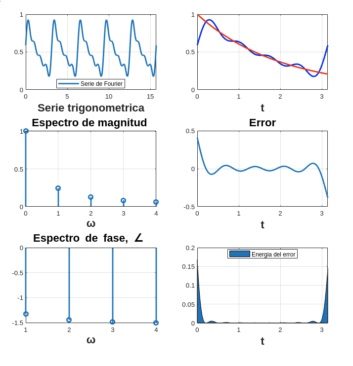
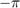
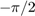

Contents
Objetivos
- Realizar gráficas de series de Fourier exponenciales y trigonométricas en tiempo continuo.
- Manipulación de instrucciones en MATLAB.
- Calculo númerico de los coeficientes de Fourier.
Introducción
En esta práctica se va a observar el tema de Series de Fourier con el apoyo de matlab para mostrar diferentes graficos que nos proporcionen información útil de la serie. Como introducción vamos a observar la aproximación numerica para encontrar los Dn de la serie exponencial compleja que vemos en la sección 6.6 del libro Lathi. Para calcular numericamente Dn se usa la transformada discreta de Fourier, este metodo utiliza muestras de la señal periodica x(t) eb un período T.
En este caso nosotros tenemos número de muestras en un periodo y
Nosotros no podemos hacer que T tienda a cero, pero si podemos tomar una T muy pequeña, así que por esta cuestion vamos a obviar el limite de T de la ecuación, siempre recordando que T es diferente de cero.
Por último podemos observar la propiedad de de periocidad, donde encontramos que
Esta propiedad significa que cada el coeficiente respresenta el valor negativo de n.
y el ciclo se repite cada
Como último recordatorio retomamos de la práctica pasada que podemos encontrar otros metodos para aproximar una integral, a continucación se puede observar uno de los métodos previamente vistos.
Desarrolo
En esta sección se van a resolver diferentes problemas que se encuentran en el libro Lathi. Para cada problema lo que se va a hacer es:
- Realizar el programa de la serie que se indica
- Gráfica de la serie de Fourier en un intervalo que muestre 5 repeticiones
- Gráfica de la señal y la serie de Fourier para 4 armonicos
- Gráfica del error
- Gráfica de la energía del error
- Espectro de magnitud para 4 armonicos
- Espectro de fase para 4 armonicos
- Todo lo anterior para 15 armonicos
Ejemplo 6.1
Encuentra la serie trigonométrica compacta de la siguiente funcion y su espectro
La función a la que le debemos sacar la serie de fourier es la siguiente

Despues del calculo matemático nosotros podemos observar que contamos con la siguiente serie.
Podemos observar la exactitud que nos puede dar la serie cuando aumentamos o disminuimos los armonicos. Vamos a observar primero la serie con 4 armonicos y despues con 15 para notar la diferencia.

En las graficas anterioes se ve poca precisión en la serie de fourier con respecto de la funcion origial. Ahora lo veremos con 15 armónicos para ver que ocurre. co
Como se puede observar, la serie de fourier con más armónicos se parece mas a nuestra función original(en rojo), tiene más precisión.
Ejemplo 6.2
Encontrar la serie exponencial y el espectro. Para este ejemplo vamos a suponer que A-3.
Ejemplo 6.4
Para este problema se tiene que realizar la serie y el espectro exponencial. Bueno para este ejemplo se tiene un pulso que va desde  a pero solo de  a tiene un valor y este valor es uno. Este ejemplo a diferencia del primer ejemplo que vimos en la práctica se toma una funcion a trozos, que es interesante ver como se gráfica y evalua para el problema. Dejaré este código en el apéndice de la práctica. Antes de graficar se tiene que realizar las operaciones matematicas para encontrar los coeficientes. En este caso primero encuentro la serie de fourier trigonometríca y de esa fórmula hago una conversion para sacar la exponencial. De la conversión tenemos que , con la fórmula de conversion y tomando en cuenta que no tenemos un podemos decir que:
Esta serie tiene coeficientes:
Estas son las gráficas con 4 armonicos:
Y esta es la diferencia que se llega a apreciar cuando aumentamos de e4 a 15 armónicos:
%
Ejemplo 6.5
En este ejemplo vamoa a encontrar la serie exponen ia serie de fourier exponencial de la funciión que previamente vimos en el ejemplo 6.1. Ahora a diferencia del ejemplo 6.1 si vamos a tener valores cuando la t sea negativa.
En esta grafica se observa que la serie no es tan exacta con apenas 4 armonicos, vemos que la gráfica de error tiene una área que para ciertos casos podría ser considerable. Se aprecia una mejor aproximacion a la gráfica origial en nuestra siguientes gráficas donde aumentemos los armónicos.
Disminuye el erro con más armónicos y así podriamos ir siendo mas exactos si ponemos un número de armonicos lo suficientemente grande.
Ejemplo 6.7
Encontrar la serie y el espectro exponencial tomando en cuenta que para este ejemplo la A=3. Para este ejemplo no es necesario colocar la gráfica original, el error ni la energía del error. Para mostrar las gráficas tomé el código de ejemplo de la práctica con ciertas modificaciones para que cumpliera con lo requerido, primero veremos como se ve la serie con cuatro armónicos.

Vamos a ver algo que a simple vista puede lelgar a ser raro y es que la gráfica de la fase, el espectro de fase esta siempre en cero, esto pasa porque al tener el numero siempre es un real positivo, eso nos indica que siempre esta sobre el eje real derecho y nos dice que siempre tendrá ángulo 0. Como es obvio suponer, se mantendré lo antes mencionado cuando aumentemos en número de armónicos.
Ejemplo C6.4
Elabore un código que implemente el algoritmo de trapecio compuesto para , Utilice este código para aproximar  del ejemplo de la práctica. Ahora implemente el código COMPUTER EXAMPLE C6.4 que se encuentra al final de la sección 6.6 de Lathi, y calcule nuevamente el los coeficientes del ejemplo propuesto. Muestre una tabla que contenga los coeficientes mencionados calculados con los dos algoritmos y de forma exacta,
del ejemplo de la práctica. Ahora implemente el código COMPUTER EXAMPLE C6.4 que se encuentra al final de la sección 6.6 de Lathi, y calcule nuevamente el los coeficientes del ejemplo propuesto. Muestre una tabla que contenga los coeficientes mencionados calculados con los dos algoritmos y de forma exacta,
Apéndice
Aquí mostrare mi código de matlab con el cual fui resolviendo los diferentes ejemplos de la práctica. Este código fue para encontrar la serie de Fourier trigonométrica
function p1(t0,tf,a0,an,bn,f,a,b,w0,armo,arg) % Tomando como referencia el código propuesto aqui ya paso todos los % argumentos necesarios para la serie de fourier, se aprecia tambien que le % paso la formula del ángulo para ser gráficado sf=a0; t=a:0.0001:b; for n=1:armo sf=sf + (an(n)*cos(n*w0*t)+bn(n)*sin(n*w0*t)); end figure (1) hFig = figure(1); set(hFig, 'Position', [0 0 900 900]) subplot(3,2,1) plot(t,sf,'LineWidth',2) grid on legend('Serie de Fourier','Location','Best') xlabel('Serie trigonometrica','FontWeight','bold','FontSize',16) sf=a0; t1=t0:0.0001:tf; for n=1:armo sf=sf + (an(n)*cos(n*w0*t)+bn(n)*sin(n*w0*t)); end subplot(3,2,2) plot(t1,f(t1),'r','LineWidth',2) grid on hold on t1=0:0.0001:pi; plot(t1,sf,'b','LineWidth',2) xlabel('t','FontWeight','bold','FontSize',16) nn=1:armo; axis auto subplot(3,2,4) e=f(t1)-sf; plot(t1,e,'LineWidth',2) title('Error','FontWeight','bold','FontSize',16) xlabel('t','FontWeight','bold','FontSize',16) axis auto grid on subplot(3,2,6) e=f(t1)-sf; area(t1,e.^2) legend('Energia del error','Location','Best') xlabel('t','FontWeight','bold','FontSize',16) axis auto grid on cn=@(x) 0.504*(2/realsqrt(1+16*x^2)); absdn=zeros(1,length(nn)); cont=1; for i =0:1:armo if i==0 absdn(cont)=a0; end absdn(cont)=cn(i); cont=cont+1; end mm=0:armo; subplot(3,2,3) stem(mm,abs(absdn),'LineWidth',2) title('Espectro de magnitud ','FontWeight','bold','FontSize',16) xlabel('\omega','FontWeight','bold','FontSize',16) grid on subplot(3,2,5) % % stem(nn,arg(nn),'LineWidth',2) title('Espectro de fase, \angle ','FontWeight','bold','FontSize',16) % % xlabel('\omega','FontWeight','bold','FontSize',16) grid on end
Para el ejemplo 6.5 y 6.7 utilicé el mismo código que viene como referencia, en el 6.5 no sele hizo ninguna modificación así que no amerita ser mencionado aquí. En cambio en el 6.7 Se llama del mismo modo pero se quitan del script las gráficas que no se necesitan.
function p7(t0,tf,dn,d0,f,armo,a,b) w0=2*pi/(tf-t0); sf=d0; t=a:0.0001:b; for n=1:armo sf=sf+dn(-n)*exp(w0*-n*t*j)+dn(n)*exp(w0*n*t*j); end figure (1) hFig = figure(1); set(hFig, 'Position', [0 0 900 900]) subplot(3,2,1) plot(t,sf,'LineWidth',2) grid on legend('Serie de Fourier','Location','Best') xlabel('t','FontWeight','bold','FontSize',16) sf=d0; t1=t0:0.0001:tf; for n=1:armo sf=sf+dn(-n)*exp(w0*-n*t1*j)+dn(n)*exp(w0*n*t1*j); end subplot(3,2,2) grid on hold on plot(t1,sf,'LineWidth',2) legend('Serie de Fourier ','Location','Best') xlabel('t','FontWeight','bold','FontSize',16) nn=-armo:armo; axis auto absdn=zeros(1,length(nn)); cont=1; for i =-armo:armo if i==0 absdn(cont)=d0; end absdn(cont)=dn(i); cont=cont+1; end subplot(3,2,3) stem(w0*nn,abs(absdn),'LineWidth',2) title('Espectro de magnitud D_n ','FontWeight','bold','FontSize',16) xlabel('\omega','FontWeight','bold','FontSize',16) grid on subplot(3,2,5) % % stem(w0*nn,angle(absdn),'LineWidth',2) % % title('Espectro de fase, \angle de D_n ','FontWeight','bold','FontSize',16) % % xlabel('\omega','FontWeight','bold','FontSize',16) grid on end
Para el ejemplo 6.4 en una función a trozos utilicé la función de ejemplo de la práctica pero la modificación interesante pasa cuando se llama pues declaro una función simbolica pero con operadores lógicos que se encargan de evaluar que función tomar y en que momento en el instante en el que son ciertos y regresan un true.
d0=1/2; dn=@(n) (sin((n*pi)/2))/(n*pi); t0=-pi; tf=pi; f=@(t) (-pi<t<-pi/2).*(0)+(-pi/2<=t<=pi/2).*(1)+(pi/2<t<pi).*(0); armo=15; a=-pi*15; b=pi*15; practica(t0,tf,dn,d0,f,armo,a,b)
Si es verdad la condicional regresa uno y multiplica a esa función, de no ser así es false y regresa un cero que sera multiplicado por la función correspondiente
Referencia
Lathi, B. P. (1998). Signal processing and linear systems (cap. 6). New York: Oxford University Press.